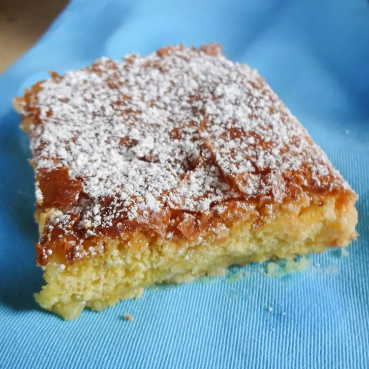

Ooey Gooey Butter Cake

Description
Gooey butter cake is a type of cake traditionally made in St. Louis, Missouri. It is a flat and dense cake made with wheat cake flour, butter, sugar, and eggs, typically near an inch tall, and dusted with powdered sugar. While sweet and rich, it is somewhat firm, and is able to be cut into pieces similarly to a brownie.
Ingredients
- 1 (15.25 ounce) package yellow cake mix
- 2 eggs
- 1/2 cup of butter, melted
- 1 teaspoon vanilla extract
- 1 (16 ounce) package confectioners' sugar, plus more for dusting
- 1 (8 ounce) package cream cheese, softened
- 2 eggs
Steps
- Preheat oven to 350 degrees F (175 degrees C). Grease a 9x13-inch baking dish.
- Mix cake mix and 2 eggs together in a bowl. Add butter and vanilla extract; mix until batter is smooth and thick. Spread batter into the prepared baking dish.
- Beat confectioners' sugar, cream cheese, and 2 eggs together in a bowl until smooth; spread over batter.
- Bake in the preheated oven until sides of cake are pulled away from dish and browned, 25 to 35 minutes. Cool cake completely. Sprinkle more confectioners' sugar over cooled cake.